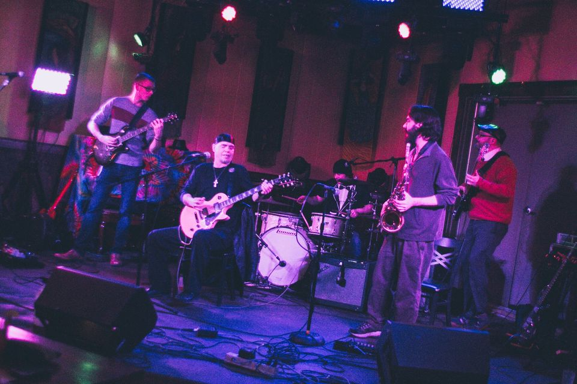

Logan Dyer Late Show is an excellent foundation for any party. The solo show includes acoustic and electric guitars, saxophones, and other instruments depending on the setlist. You'll recognize some songs and hear others for the first time with a nice mix of blues, classic rock, outlaw country, and originals. Logan Dyer works with the best musicians in the Midwest, and the Late Show is also available as a duet.
Logan Dyer & The Fire is a supergroup made of the best players around; many are bandleaders of other projects as well. For special events and larger venues, the full band is the strongest choice. This is the highest energy guitar and saxophone experience available.